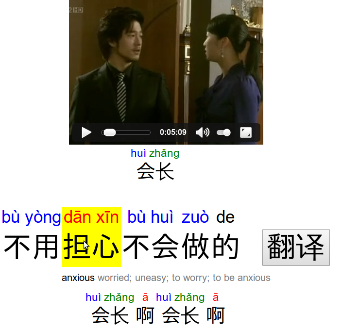

Smart Subtitles
About
Smart Subtitles teach you vocabulary while you watch foreign-language videos.
You can read about it here (video).
Try it
You can watch a demo video.
Or, if you have a video of your own, try it with your own subtitles.
Screenshot

Contact
Smart Subtitles were developed by Geza Kovacs.